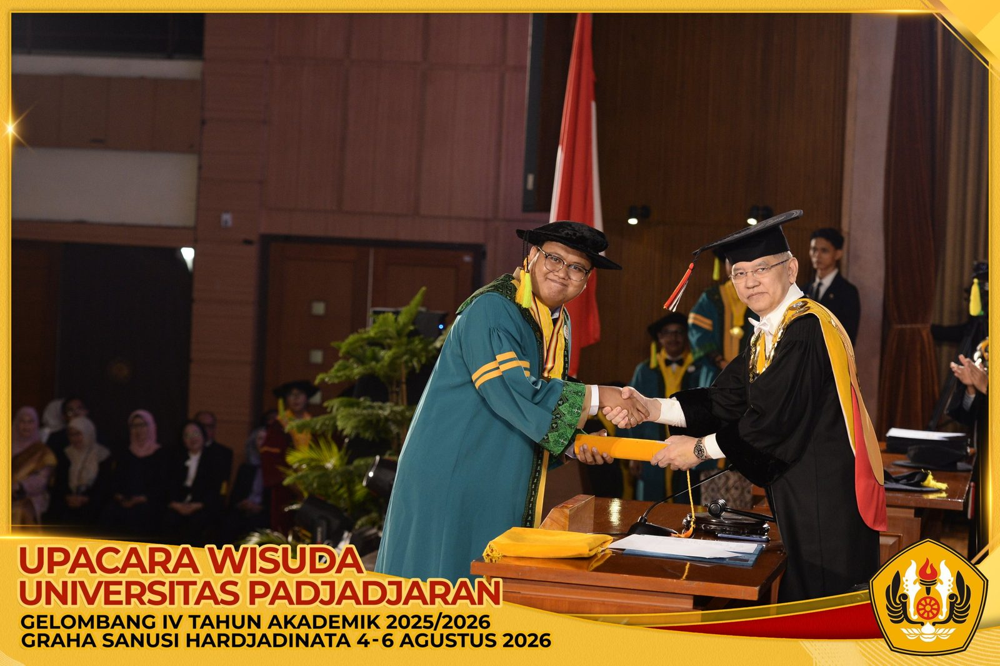

Komara, Diemas Arya.
Researcher, editor, system builder / Diemas Arya Komara. — Bandung, 2026.
1. Misinformation. 2. Information literacy. 3. Library science. I. Title.
I study how people meet misinformation online and how literacy helps them judge it. I also build small information systems for libraries and researchers. Saya meneliti bagaimana orang berhadapan dengan misinformasi di dunia digital dan bagaimana literasi membantu mereka menilainya. Saya juga membangun sistem informasi kecil untuk perpustakaan dan peneliti.
Teaching assistant in Library and Information Science at Universitas Padjadjaran, where I graduated as best graduate of the Master of Communication Science in 2026. Journal editor since 2021. Asisten dosen Perpustakaan dan Sains Informasi di Universitas Padjadjaran, tempat saya lulus sebagai wisudawan terbaik Magister Ilmu Komunikasi pada 2026. Editor jurnal sejak 2021.
Drag the card, or tap to turn it over. Tarik kartunya, atau ketuk untuk membalik.
My main question is how students and young people deal with political misinformation and disinformation on social media, and which media and information literacy skills help them recognise it. I test this with surveys and with data collected from the platforms themselves. Pertanyaan utama riset saya adalah bagaimana pelajar dan anak muda menghadapi misinformasi politik dan disinformasi di media sosial, serta keterampilan literasi media dan informasi apa yang membantu mereka mengenalinya. Saya mengujinya lewat survei dan data yang dikumpulkan langsung dari platform.
I also work on literacy in practice: reviving school libraries, running digital literacy workshops, and understanding how Gen Z looks for and uses information. Through development communication I look at how information reaches the communities it is meant to serve. Saya juga menekuni literasi dalam praktik: menghidupkan kembali perpustakaan sekolah, menyelenggarakan lokakarya literasi digital, dan memahami cara Gen Z mencari serta memakai informasi. Lewat komunikasi pembangunan, saya melihat bagaimana informasi sampai ke masyarakat yang seharusnya dilayaninya.
Methods and tools: social media data crawling (RapidMiner), bibliometric mapping (VOSviewer, Biblioshiny in R), PLS-SEM (SmartPLS) and SPSS. Metode dan perangkat: crawling data media sosial (RapidMiner), pemetaan bibliometrik (VOSviewer, Biblioshiny di R), PLS-SEM (SmartPLS) dan SPSS.
Teaching assistant, Library and Information Science programme, Universitas Padjadjaran, since August 2026. I assist in three undergraduate courses: Asisten dosen, Program Studi Perpustakaan dan Sains Informasi, Universitas Padjadjaran, sejak Agustus 2026. Saya membantu mengajar tiga mata kuliah sarjana:
I can also teach in English (TOEFL ITP 620). Saya juga dapat mengajar dalam bahasa Inggris (TOEFL ITP 620).
Taught Legal Aspects and Professional Ethics and helped develop its learning modules.Mengajar mata kuliah Aspek Hukum dan Etika Profesi serta membantu menyusun modul pembelajarannya.
Revitalised a school library and ran literacy programmes with interactive materials.Merevitalisasi perpustakaan sekolah dan menjalankan program literasi dengan materi interaktif.
Faculty of Language and Literature Education, Universitas Pendidikan IndonesiaFakultas Pendidikan Bahasa dan Sastra, Universitas Pendidikan Indonesia
Himpunan Mahasiswa Pendidikan Basa jeung Sastra Sunda
More than 20 articles in national journals, cited 535 times, with an h-index of 10 and an i10-index of 10 on Google Scholar (August 2026). A selection: Lebih dari 20 artikel di jurnal nasional, dikutip 535 kali, dengan h-index 10 dan i10-index 10 di Google Scholar (Agustus 2026). Sebagian di antaranya:
The full list is on Google ScholarDaftar lengkapnya ada di Google Scholar
Tools I have built for library and research work, mostly in HTML, CSS and JavaScript. I am happy to demonstrate any of them. Perangkat yang saya bangun untuk pekerjaan perpustakaan dan riset, sebagian besar dengan HTML, CSS dan JavaScript. Saya senang mendemonstrasikannya.
Finds the citations and references in an academic manuscript and checks their sources, so fabricated references can be flagged before review.Menemukan sitasi dan referensi dalam naskah akademik lalu memeriksa sumbernya, sehingga referensi fiktif bisa ditandai sebelum ditelaah.
Suggests Dewey Decimal Classification numbers for library materials, drawing on WorldCat and Perpusnas RI records while its own classification database grows.Menyarankan nomor Dewey Decimal Classification untuk bahan pustaka, memakai rekaman WorldCat dan Perpusnas RI sambil basis data klasifikasinya sendiri diperluas.
A networking and knowledge-sharing space for librarians, students and researchers. Not launched publicly yet.Ruang berjejaring dan berbagi pengetahuan bagi pustakawan, mahasiswa dan peneliti. Belum diluncurkan untuk umum.
A Chrome extension that collects comments from X for research. The crawler works; the message-type classifier is still being built.Ekstensi Chrome yang mengumpulkan komentar dari X untuk riset. Crawler-nya sudah berjalan; pengklasifikasi jenis pesannya masih dibangun.
Information hub for the faculty's quality assurance unit: team, SOPs, and accreditation and quality databases. Discontinued once the faculty built this into its own website.Pusat informasi satuan penjaminan mutu fakultas: tim, SOP, serta basis data akreditasi dan mutu. Tidak dilanjutkan setelah fakultas memasukkannya ke situs resminya.
Directory of the faculty's journals by study programme, with accreditation status and links. Discontinued once the university launched its own journal portal.Direktori jurnal fakultas per prodi, lengkap dengan status akreditasi dan tautannya. Tidak dilanjutkan setelah universitas meluncurkan portal jurnalnya sendiri.
Faculty of Educational Sciences, Universitas Pendidikan IndonesiaFakultas Ilmu Pendidikan, Universitas Pendidikan Indonesia
Curricula: Journal of Curriculum Development; Jurnal Inovasi Kurikulum; Dedicated: Journal of Community Services; Hipkin Journal of Educational Research
Library of the Architecture Department, Institut Teknologi BandungPerpustakaan Program Studi Arsitektur, Institut Teknologi Bandung
Library and Information Science concentration. GPA 3.87, cum laude, best graduate. Completed in three semesters.Konsentrasi Ilmu Perpustakaan dan Informasi. IPK 3,87, cum laude, wisudawan terbaik. Selesai dalam tiga semester.
GPA 3.80, cum laude.IPK 3,80, cum laude.
Library and Information Science, Malaysia.Ilmu Perpustakaan dan Informasi, Malaysia.

I am open to lecturer positions, research collaboration and editorial work, and I live in Bandung, West Java. Email me for my CV or a demonstration of my systems. Saya terbuka untuk posisi dosen, kolaborasi riset dan pekerjaan editorial, dan tinggal di Bandung, Jawa Barat. Kirim email untuk meminta CV atau demonstrasi sistem saya.